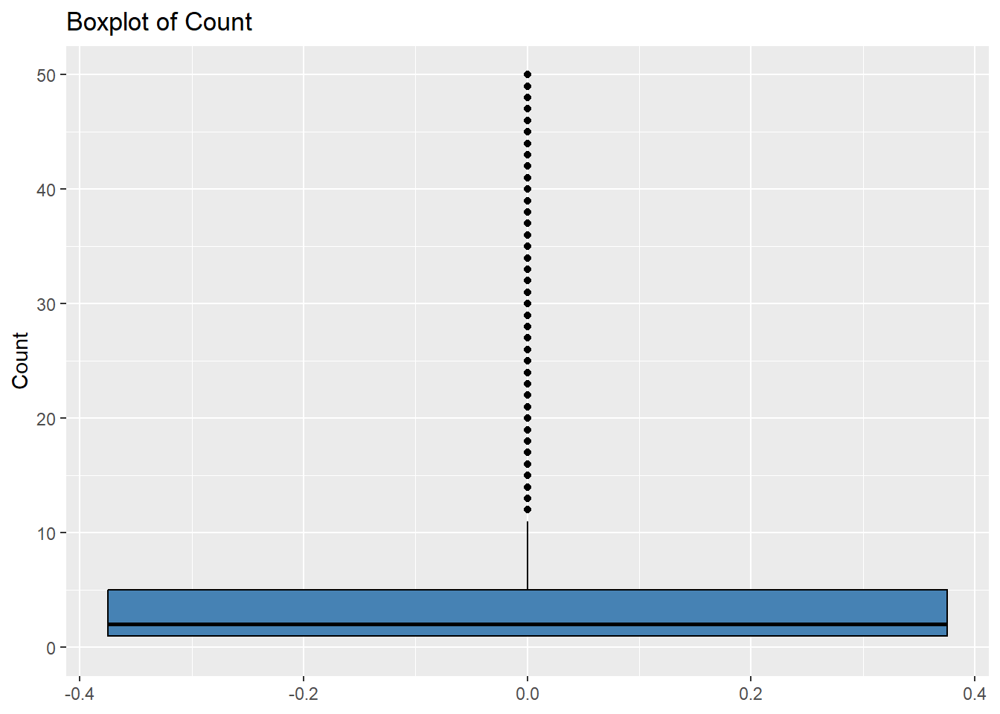
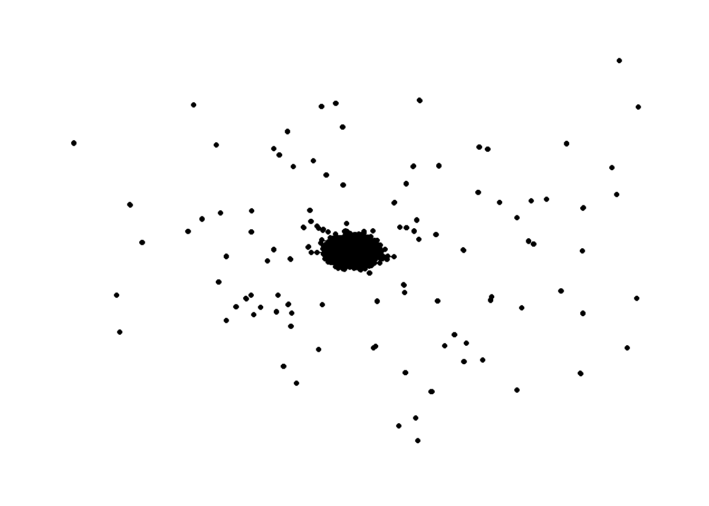

Show me the good stuff
pacman::p_load(igraph, tidygraph, ggraph,
visNetwork, lubridate, clock,
tidyverse, graphlayouts, jsonlite)Weight field calculating number of times target communicated with the source.
(multiple source to target links at diff times)
In and out weight (In degree and out degree)
Aggregate out big network
(In class ex reference to weight field)
pacman::p_load(igraph, tidygraph, ggraph,
visNetwork, lubridate, clock,
tidyverse, graphlayouts, jsonlite)MC2 <- fromJSON("data/mc2_challenge_graph.json")MC2_nodes <- as_tibble(MC2$nodes) %>%
select(id,shpcountry, rcvcountry) #using select function to reorganise into desired order of columns
MC2_edges <- as_tibble(MC2$links) %>%
select(source, target, valueofgoods_omu, valueofgoodsusd, weightkg, hscode, arrivaldate)MC2_edges <- MC2_edges %>% distinct()
MC2_nodes <- MC2_nodes %>% distinct()MC2_edges <- MC2_edges %>%
mutate(Month = month(arrivaldate,
label = TRUE,
abbr = FALSE))
# rename columns
MC2_edges <- MC2_edges %>%
rename('Value_OMU' = 'valueofgoods_omu',
'Value_USD' = 'valueofgoodsusd',
'Weight_KG' = 'weightkg',
'HS_Code' = 'hscode',
'Arrival_Date' = 'arrivaldate')MC2_edges <- MC2_edges[complete.cases(MC2_edges[, c("source", "target")]), ]carp <- fromJSON("data/carp.json")
catfish <- fromJSON("data/catfish.json")
c_mac <- fromJSON("data/chub_mackerel.json")
cod <- fromJSON("data/cod2.json")
herring <- fromJSON("data/herring.json")
lichen <- fromJSON("data/lichen.json")
mac <- fromJSON("data/mackerel.json")
pol <- fromJSON("data/pollock.json")
salmon <- fromJSON("data/salmon.json")
sal_wgl <- fromJSON("data/salmon_wgl.json")
shark <- fromJSON("data/shark.json")
tuna <- fromJSON("data/tuna.json")carp_nodes <- as_tibble(carp$nodes) %>%
select(id,shpcountry, rcvcountry) #using select function to reorganise into desired order of columns
carp_edges <- as_tibble(carp$links) %>%
select(source, target, valueofgoods_omu, weightkg, hscode, arrivaldate)
# rename columns
carp_edges <- carp_edges %>%
rename('Source' = 'source',
'Target' = 'target',
'Value_OMU' = 'valueofgoods_omu',
'Weight_KG' = 'weightkg',
'HS_Code' = 'hscode',
'Arrival_Date' = 'arrivaldate')c_mac_nodes <- as_tibble(c_mac$nodes) %>%
select(id,shpcountry, rcvcountry) #using select function to reorganise into desired order of columns
c_mac_edges <- as_tibble(c_mac$links) %>%
select(source, target, valueofgoods_omu, weightkg, hscode, arrivaldate)
# rename columns
c_mac_edges <- c_mac_edges %>%
rename('Source' = 'source',
'Target' = 'target',
'Value_OMU' = 'valueofgoods_omu',
'Weight_KG' = 'weightkg',
'HS_Code' = 'hscode',
'Arrival_Date' = 'arrivaldate')cod_nodes <- as_tibble(cod$nodes) %>%
select(id,shpcountry, rcvcountry) #using select function to reorganise into desired order of columns
cod_edges <- as_tibble(cod$links) %>%
select(source, target, valueofgoods_omu, weightkg, hscode, arrivaldate)
# rename columns
cod_edges <- cod_edges %>%
rename('Source' = 'source',
'Target' = 'target',
'Value_OMU' = 'valueofgoods_omu',
'Weight_KG' = 'weightkg',
'HS_Code' = 'hscode',
'Arrival_Date' = 'arrivaldate')Catfish sus, no weight data (underreporting/overreporting is a trait of illegal fishing?)
catfish_nodes <- as_tibble(catfish$nodes) %>%
select(id,shpcountry, rcvcountry) #using select function to reorganise into desired order of columns
catfish_edges <- as_tibble(catfish$links) %>%
select(source, target, valueofgoods_omu, hscode, arrivaldate)
# rename columns
catfish_edges <- catfish_edges %>%
rename('Source' = 'source',
'Target' = 'target',
'Value_OMU' = 'valueofgoods_omu',
'HS_Code' = 'hscode',
'Arrival_Date' = 'arrivaldate')herring_nodes <- as_tibble(herring$nodes) %>%
select(id,shpcountry, rcvcountry) #using select function to reorganise into desired order of columns
herring_edges <- as_tibble(herring$links) %>%
select(source, target, valueofgoods_omu, weightkg, hscode, arrivaldate)
# rename columns
herring_edges <- herring_edges %>%
rename('Source' = 'source',
'Target' = 'target',
'Value_OMU' = 'valueofgoods_omu',
'Weight_KG' = 'weightkg',
'HS_Code' = 'hscode',
'Arrival_Date' = 'arrivaldate')lichen_node <- as_tibble(lichen$nodes) %>%
select(id,shpcountry, rcvcountry) #using select function to reorganise into desired order of columns
lichen_edges <- as_tibble(lichen$links) %>%
select(source, target, valueofgoods_omu, weightkg, hscode, arrivaldate)
# rename columns
lichen_edges <- lichen_edges %>%
rename('Source' = 'source',
'Target' = 'target',
'Value_OMU' = 'valueofgoods_omu',
'Weight_KG' = 'weightkg',
'HS_Code' = 'hscode',
'Arrival_Date' = 'arrivaldate')mac_nodes <- as_tibble(mac$nodes) %>%
select(id,shpcountry, rcvcountry) #using select function to reorganise into desired order of columns
mac_edges <- as_tibble(mac$links) %>%
select(source, target, valueofgoods_omu, hscode, arrivaldate)
# rename columns
mac_edges <- mac_edges %>%
rename('Source' = 'source',
'Target' = 'target',
'Value_OMU' = 'valueofgoods_omu',
'HS_Code' = 'hscode',
'Arrival_Date' = 'arrivaldate')pol_nodes <- as_tibble(pol$nodes) %>%
select(id,shpcountry, rcvcountry) #using select function to reorganise into desired order of columns
pol_edges <- as_tibble(pol$links) %>%
select(source, target, valueofgoods_omu, weightkg, hscode, arrivaldate)
# rename columns
pol_edges <- pol_edges %>%
rename('Source' = 'source',
'Target' = 'target',
'Value_OMU' = 'valueofgoods_omu',
'Weight_KG' = 'weightkg',
'HS_Code' = 'hscode',
'Arrival_Date' = 'arrivaldate')sal_wgl_nodes <- as_tibble(sal_wgl$nodes) %>%
select(id,shpcountry, rcvcountry) #using select function to reorganise into desired order of columns
sal_wgl_edges <- as_tibble(sal_wgl$links) %>%
select(source, target, valueofgoods_omu, weightkg, hscode, arrivaldate)
# rename columns
sal_wgl_edges <- sal_wgl_edges %>%
rename('Source' = 'source',
'Target' = 'target',
'Value_OMU' = 'valueofgoods_omu',
'Weight_KG' = 'weightkg',
'HS_Code' = 'hscode',
'Arrival_Date' = 'arrivaldate')salmon_nodes <- as_tibble(salmon$nodes) %>%
select(id,shpcountry, rcvcountry) #using select function to reorganise into desired order of columns
salmon_edges <- as_tibble(salmon$links) %>%
select(source, target, valueofgoods_omu, weightkg, hscode, arrivaldate)
# rename columns
salmon_edges <- salmon_edges %>%
rename('Source' = 'source',
'Target' = 'target',
'Value_OMU' = 'valueofgoods_omu',
'Weight_KG' = 'weightkg',
'HS_Code' = 'hscode',
'Arrival_Date' = 'arrivaldate')tuna_nodes <- as_tibble(tuna$nodes) %>%
select(id,shpcountry, rcvcountry) #using select function to reorganise into desired order of columns
tuna_edges <- as_tibble(tuna$links) %>%
select(source, target, valueofgoods_omu, hscode, arrivaldate)
# rename columns
tuna_edges <- tuna_edges %>%
rename('Source' = 'source',
'Target' = 'target',
'Value_OMU' = 'valueofgoods_omu',
'HS_Code' = 'hscode',
'Arrival_Date' = 'arrivaldate')c_mac_edges <- c_mac_edges %>% distinct()
carp_edges <- carp_edges %>% distinct()
catfish_edges <- catfish_edges %>% distinct()
cod_edges <- cod_edges %>% distinct()
herring_edges <- herring_edges %>% distinct()
lichen_edges <- lichen_edges %>% distinct()
mac_edges <- mac_edges %>% distinct()
pol_edges <- pol_edges %>% distinct()
sal_wgl_edges <- sal_wgl_edges %>% distinct()
salmon_edges <- salmon_edges %>% distinct()
shark_edges <- shark_edges %>% distinct()
tuna_edges <- tuna_edges %>% distinct()all_edges<- c("carp_edges", "c_mac_edges", "cod_edges", "catfish_edges", "herring_edges", "lichen_edges", "mac_edges", "pol_edges", "salmon_edges", "sal_wgl_edges", "shark_edges", "tuna_edges") # Add more dataset names as neededunique_hscodes <- character() # Initialize an empty vector to store unique hs codes
for (all_edges in all_edges) {
dataset <- get(all_edges) # Extract the dataset
unique_hscodes <- unique(c(unique_hscodes, dataset$HS_Code)) # Extract unique hs codes and append to the vector
}filtered_MC2_edges <- MC2_edges[MC2_edges$HS_Code %in% unique_hscodes, ]MC2_edges_aggregated <- filtered_MC2_edges %>%
group_by(source,target) %>%
summarise(Value_OMU_Total = sum(Value_OMU, na.rm = TRUE),
Value_USD_Total = sum(Value_USD, na.rm = TRUE),
Count = n(),
Average_OMU = mean(Value_OMU, na.rm = TRUE),
Average_USD = mean(Value_USD, na.rm = TRUE),
Total_Weight_KG = sum(Weight_KG, na.rm = TRUE),
Average_Weight_KG = mean(Weight_KG, na.rm = TRUE)) %>%
ungroup()mean_links <- mean(MC2_edges_aggregated$Count)
median_links <- median(MC2_edges_aggregated$Count)
print(mean_links)[1] 19.89948print(median_links)[1] 2ggplot(MC2_edges_aggregated, aes(y = Count)) +
geom_boxplot(fill = "steelblue", color = "black") +
labs(y = "Count", title = "Boxplot of Count")
ggplot(MC2_edges_aggregated, aes(y = Count)) +
geom_boxplot(fill = "steelblue", color = "black") +
labs(y = "Count", title = "Boxplot of Count") +
ylim(0, 50)
Based on the boxplots, we see that the data is bottom heavy, which is consistent with the median score of 2. Given that we are interested in abnormal data (large counts), we will filter the bulk of the data by the mean value(19.8) to focus our examination of links above this connection threshold.
filtered_dataset <- subset(MC2_edges_aggregated, Count > 19.8)MC2d_filtered <- distinct(filtered_dataset)id1 <- MC2d_filtered %>%
select(source) %>%
rename(id = source)
id2 <- MC2d_filtered %>%
select(target) %>%
rename(id = target)
mc2_nodes_extracted <- rbind(id1, id2) %>%
distinct()mc2_graph <- tbl_graph(nodes = mc2_nodes_extracted,
edges = MC2d_filtered,
directed = TRUE)ggraph(mc2_graph,
layout = "fr") +
geom_edge_link(aes()) +
geom_node_point(aes()) +
theme_graph()